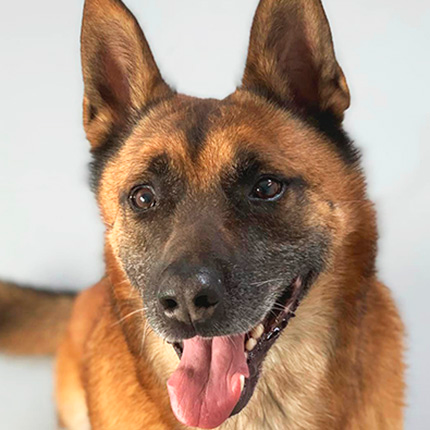

AnimaAide
À la découverte de l’association Sans Collier pour la protection des animaux.
Elle recueille des animaux abandonnés ou saisis et les soigne. L’association cherche également de nouvelles familles prêtes à accueillir ces animaux. Elle a été créée en 1972 en Belgique et compte deux refuges, à Chastre et à Perwez.
« Et si on adoptait un chien ? » , c’est la question que mon père me pose.
N'ayant aucune association en tête, j'ai demandé autour de moi, mais personne n'avait d'idées à me proposer, jusqu'à ce qu'une de mes amies me parle de «Sans Collier» et me la recommande. Je me suis demandée pourquoi je n'y avais pas pensé plus tôt car à chaque fois que je passe devant le refuge de Chastre, mon père me dit en plaisantant : « On adopte un chien ! » . De plus, J'ai toujours aimé les chats, surtout que j'ai toujours vécu avec eux. Mon choix s'est donc naturellement porté sur une association pour les animaux. Contacter l'association était une épreuve pour moi, alors j'ai pris mon courage à deux mains pour envoyer un mail et surtout pour m'y rendre en personne.
Et si je les contacte ?
J'ai contacté l'association le mardi 14 février et la réponse ne s'est pas faite attendre. À peine une heure après l'envoi du mail, l'association m'avait déjà répondu favorablement. Un rendez-vous a été fixé pour le jeudi de la même semaine à 14 heures au refuge de Perwez.
Une petite interview !
En quoi consiste votre travail ?
On répond aux besoins du bien-être animal et on prend en charge les animaux. On fait bouger les choses pour la protection des animaux.
Pouvez-vous me décrire le système de l’association ?
On reçoit une plainte par mail, un appel, on lit la plainte, on constate s'il y a maltraitance sur place et on trouve une solution. Si tout va bien, on laisse l’animal au propriétaire sinon on l'amène à l'association.
Comment les adoptions sont-elles gérées ?
Dans 25 % des cas l’adoption est refusée. D’abord, il y a une entrevue pour cerner les personnes. Ensuite, le futur propriétaire rencontre le chien et il peut faire une promenade avec. Si un chien a tapé dans l'oeil d’une famille mais qu’il ne correspond pas au train de vie de la famille, on la redirige vers un autre chien. Sinon, on organise une rencontre avec le chien.
Comment travaille l'association avec les propriétaires et les familles adoptives pour assurer le bien-être des animaux adoptés ?
Il y a un suivi après l’adoption. Après 3 semaines, on envoie un sms aux adoptants. Puis, après environ 3 mois, on les appelle et au cours de l’année, une visite sur place est organisée. On attend plus ou moins un an pour que le chien ait le temps de trouver ses marques.
Avez vous déjà eu des problèmes avec des familles ?
Oui, des animaux sont ramenés car ils ont aboyé, ils faisaient leurs besoins à l'intérieur, ... Très rarement, la visite ne s’est pas bien passée donc nous avions repris l’animal.
Quelle est la pire expérience (d’utilisateur) à propos des adoptions que vous avez vécu ?
Les chien qui sont adoptés et ramenés le lendemain, c’est frustrant.
Pouvez-vous nous décrire les principales problématiques auxquelles vos employés/collègues sont confrontés ?
Placer les animaux, bien comprendre les personnes, des plaintes incomplètes, les personnes qui portent plainte pour embêter leurs voisins.
Avez-vous déjà trouvé des solutions à ce(ces) problème(s) ?
Il faudrait un formulaire à remplir en ligne.
Quel est l’aspect le plus frustrant de votre journée ?
Les chiens reviennent après 24 heures, c’est du temps perdu.
Lors de cette interview, plusieurs questions ont fait ressortir un problème. La responsable que j'ai interviewée répétait souvent que les plaintes étaient parfois incomplètes ou que certaines d'entre elles étaient déposées uniquement pour embêter leurs voisins. Elle a déclaré que c'était dommage qu'il n'y ait pas de formulaire en ligne pour les dépôts de plaintes.
En conclusion, les problématiques sont que les plaintes sont incomplètes, injustement déposées et que certains animaux sont rendus 24 heures après l'adoption. La solution trouvée est donc un formulaire en ligne pour évaluer si la plainte est fondée ou non, ainsi qu'un formulaire pour avoir une première impression des personnes souhaitant adopter. Il sera également demandé un moyen de contacter la personne qui porte plainte, ainsi qu'une explication de la situation.
Problèmes & solutions
Les problématiques identifiées
- Les plaintes incomplètes et injustements déposées
- Les chiens reviennent 24 heures après l’adoption
- 25 % des demandes d’adoption sont refusées
Les deux formulaires
- Le dépôt de plaintes
- L’adoption
Solution hypothétique
Je pense à créer une application qui permet de déposer une plainte en cas de constatation de maltraitance d'animaux.
Cela permettrait d'avoir des plaintes plus complètes. Des vidéos et des photos pourront être ajoutées pour recueillir des preuves de maltraitances. Un moyen de contacter la personne qui dépose plainte sera également demandé, ainsi qu'une explication de la situation.
Modules développés
Pour déposer plainte, le prénom sera à compléter dans un champ de texte. Le moyen de contact (mail, téléphone, ...) pourra être choisi en cochant celui souhaité puis en remplissant un champ de texte. Un bouton permettra d’ajouter des photos et vidéos.
Présentation
Mon travail sera finalement présenté devant un jury. Pour la présentation, nous avons 6 minutes pour expliquer nos projets et comment nous sommes arrivés à nos conclusions. D'abord, nous présentons les problèmes qu’on a identifié grâce aux interviews et un problème qu’on a choisi de résoudre. Pour finir, on explique la solution imaginée à ce problème.
Pour finir...
J'ai choisi une association pour les animaux, alors j'ai pris mon courage à deux mains pour envoyer un mail et surtout pour m'y rendre en personne. J'ai contacté l'association le mardi 14 février et un rendez-vous a été fixé pour le jeudi de la même semaine.
Lors de cette interview, j'ai pu identifier des problèmes et y trouver des solutions. Les problématiques sont les suivantes : les plaintes sont incomplètes, injustement déposées et certains animaux sont rendus 24 heures après l'adoption.
La solution la plus adaptée serait un formulaire en ligne pour évaluer si la plainte est fondée ou non. Je pense qu'une application serait utile afin de déposer des plaintes pour que celles-ci soient plus complètes. Cette application comporterait un formulaire qui permettrait de recueillir des informations sur la situation.